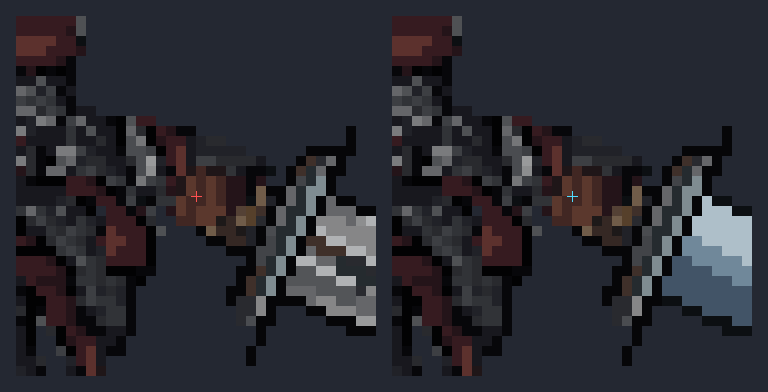
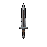
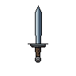
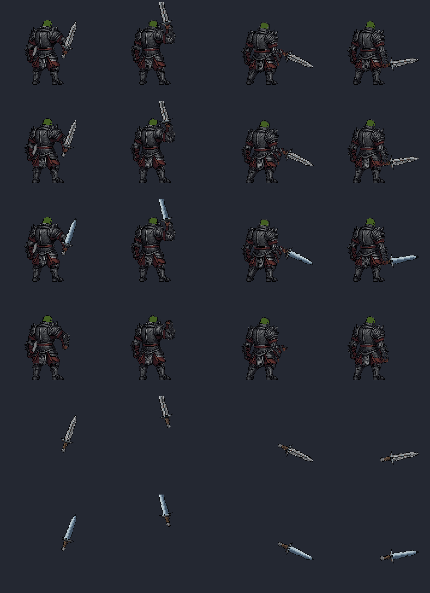

back_r)Orc principal, ataque de Espada, direção back_r recuperada. A pergunta desta
rodada: a mesma arquitetura de duas espadas sobre um corpo funciona na vista traseira — onde a arma
se divide em weaponBack e weaponFront — sem reconstruir anatomia?
VISUAL_REVIEW_REQUIRED · PENDING_CREATOR
body e handFront são byte-idênticos à fonte recuperada do
back_r (28+28 comparações), e o composto da Variante A é byte-idêntico ao original
(14/14). Só a arte da lâmina muda. Nenhuma adaptação de pegada foi necessária: esta
direção declara grip e rotationDeg em todos os 10 quadros armados, e
todos os 10 pivôs declarados foram confirmados pela arte (desvio da estimativa por centroide
≤ 0,58 px). Defeitos herdados
não foram corrigidos de propósito.
carregando…
É aqui que a pegada se julga. Nas duas variantes a luva, o cabo e a oclusão têm de ser os mesmos; só a lâmina muda. Nas vistas traseiras, cruze com a tabela de profundidade abaixo: cabo/pomel atrás do corpo, guarda+lâmina na frente do corpo.




| Verificação | Resultado |
|---|---|
body e handFront byte-idênticos à fonte do back_r | 28/28 e 28/28 |
Corpo isolado idêntico entre A e B (todas as 14 camadas body) | 28/28 |
| Composto da Variante A idêntico ao original recuperado | 14/14 (0 pixel) |
| Quadros desarmados sem nenhum pixel de arma | F00, F01, F12, F13 |
| Silhueta da arma alterada pela Variante B | 0 pixels (10/10 quadros armados) |
| Pixels da lâmina A sobreviventes em B | 0 |
| Halo de matte | 0 pixels |
| Pixels de lâmina repintados (10 quadros com arma) | 4735, preservando a contagem de pixels da arma |
| Tempos preservados (14 quadros, 730 ms, contato F08 / 325 ms) | sim, nas duas variantes |
| Mesmos dois assets de espada do Experimento 04 e Piloto B1, byte a byte | sim |
back_r) — como conferirA ordem de camadas é weaponBack → body → weaponFront → handFront.
No back_r o cabo/pomel fica atrás do quadril/tronco direito (weaponBack,
incluindo a pega de couro no F06), enquanto 100% da guarda e da lâmina ficam na frente
do corpo (weaponFront; no F06, 51 px de cabo passam à frente do corpo; 172 px de guarda
na frente no F02). Ao julgar cada quadro armado, verifique se essa divisão continua legível nas
duas variantes — a Variante B herdou exatamente a mesma divisão.
Como body e handFront são byte-idênticos à fonte nas duas
variantes, qualquer característica de anatomia, armadura ou oclusão que pareça estranha é
necessariamente herdada do original recuperado — a composição não pôde introduzi-la. A Animação
traseira recuperada de back_r/Sword não recebeu defeitos confirmados no QA independente
(as apontados foram back_l/Sword, back_r/Axe e back_l/Axe);
os pontos a observar ficam por conta do criador:
Nada nesta lista foi introduzido pela composição: o delta não-arma do composto é 0 pixel em todos os 14 quadros.